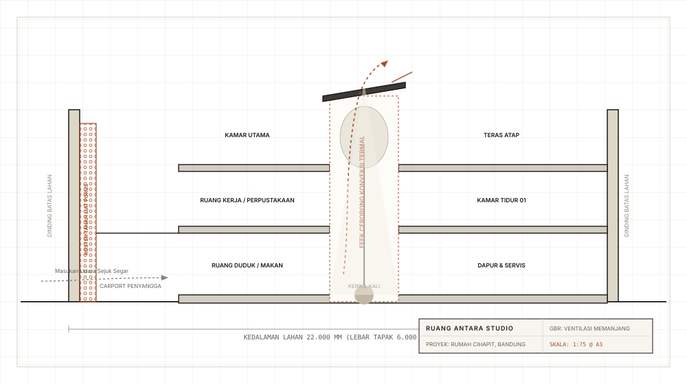

Rumah Cihapit: Solusi Lahan Sempit Enam Meter
“Ketika Anda tidak dapat membuka jendela di sisi kiri dan kanan, Anda harus membuka seluruh jantung bangunan ke arah langit.”
Di kawasan pemukiman padat bersejarah seperti Cihapit di pusat kota Bandung, lahan hunian kerap berbentuk lorong panjang dan sempit yang terhimpit di antara dua dinding batas tetangga tanpa celah samping. Pendekatan pengembang konvensional biasanya membangun dinding masif dari ujung ke ujung, menghasilkan ruang dalam yang gelap, lembap, pengap, dan terpaksa bergantung pada lampu serta pendingin udara buatan tanpa henti selama 24 jam sehari.
Alih-alih memaksimalkan setiap jengkal pelat lantai menjadi ruang tertutup, kami sengaja mengorbankan 25 meter persegi tepat di tengah denah untuk menghadirkan void courtyard terbuka ke langit setinggi tiga lantai (ruang terbuka hijau mikro). Ruang terbuka inilah yang berfungsi sebagai paru-paru rumah. Cahaya matahari jatuh bebas ke hamparan batu kerikil kali dan sebatang pohon tabebuia ramping, sementara dinamika termal secara alami menarik udara sejuk dari area teras depan dan membuang hawa panas ke atas melalui celah ventilasi atap kaca berkisi.
Di sisi muka yang menghadap ke jalanan Cihapit yang ramai, sekat fasad tersusun dari balok roster tanah liat bakar tanpa glasir (terracotta breeze blocks). Porositas material ini berfungsi menyaring kebisingan deru kendaraan dan silau terik matahari, sembari membiarkan hembusan angin sejuk malam hari tetap leluasa masuk menyejukkan interior. Saat musim hujan tiba, gemericik air yang jatuh langsung ke tengah rumah menciptakan ketenangan mendalam di tengah hiruk-pikuk kota.


Cahaya langit alami menyinari ruang duduk lantai dasar tanpa membawa radiasi panas langsung ke dalam rumah.

Roster tanah liat lokal buatan tangan dengan porositas 40% mengalirkan angin malam sekaligus menjaga privasi ruang keluarga.